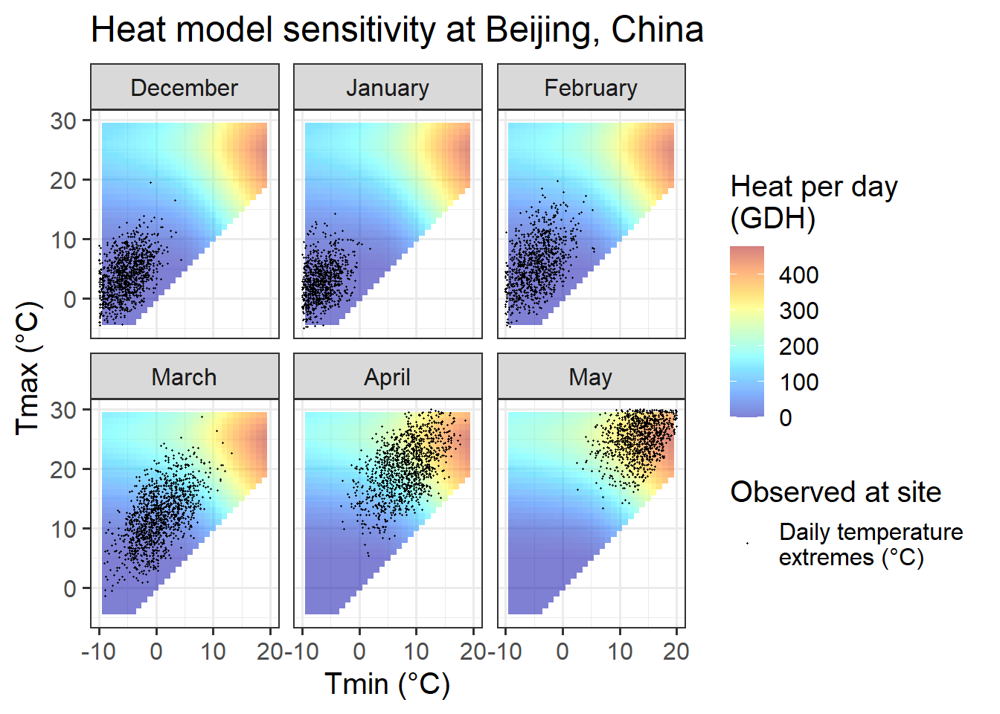
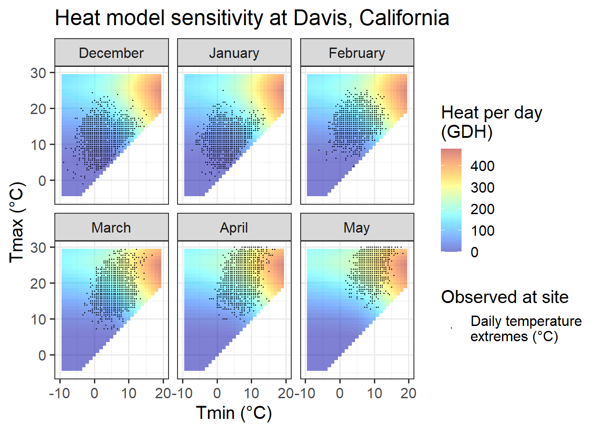
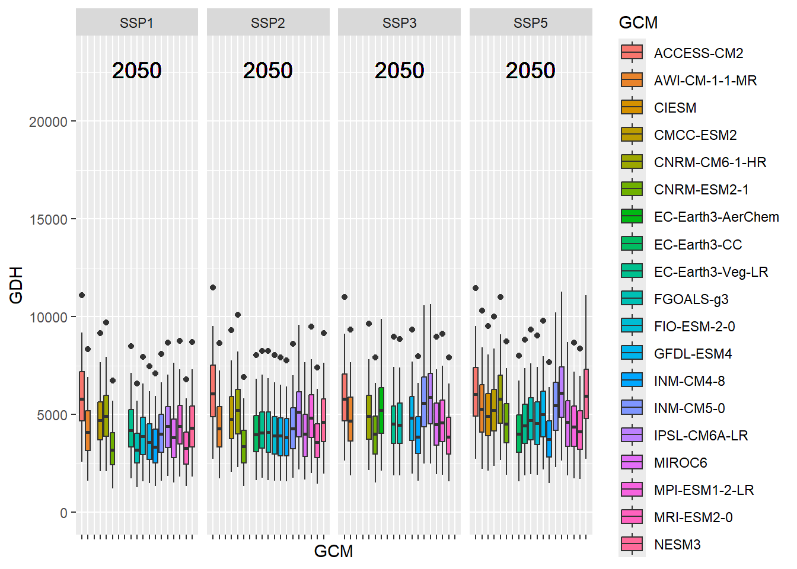

Chapter 18 Plotting future scenarios
18.1 Learning goals for this lesson
- Learn how we can use the
ggplot2package to make an appealing illustrations of the chill projection results
18.2 Making attractive plots
The default function in chillR can generate plots for climate impact projections, but its design may not always meet user preferences. The current version of the plot_climate_scenarios function offers limited options for customizing the plot’s appearance. This limitation is primarily due to the function being written before extensive use of ggplot2.
In this chapter, a similar figure will be recreated using ggplot, offering greater flexibility and customization. Eduardo Fernandez has already developed a function for this, which is included in chillR. However, the process will be built up gradually here to demonstrate how complex plots can be constructed using ggplot. Eduardo’s code has been slightly modified for clarity, but the core ideas remain his.
First, all necessary packages will be installed and loaded. New packages introduced here are ggpmisc and patchwork.
Building on prior work, the outputs produced in the chapters Historic Temperature Scenarios and Making CMIP6 Scenarios will also need to be loaded.
library(kableExtra)
library(chillR)
library(tidyverse)
library(ggpmisc)
library(patchwork)
chill_hist_scenario_list <- load_temperature_scenarios("data",
"Bonn_hist_chill_305_59")
actual_chill <- read_tab("data/Bonn_observed_chill_305_59.csv")
chill_future_scenario_list <- load_temperature_scenarios("data/future_climate","Bonn_futurechill_305_59")
chills <- make_climate_scenario(
chill_hist_scenario_list,
caption = "Historic",
historic_data = actual_chill,
time_series = TRUE)
SSPs <- c("ssp126", "ssp245", "ssp370", "ssp585")
Times <- c(2050, 2085)
list_ssp <-
strsplit(names(chill_future_scenario_list), '\\.') %>%
map(2) %>%
unlist()
list_gcm <-
strsplit(names(chill_future_scenario_list), '\\.') %>%
map(3) %>%
unlist()
list_time <-
strsplit(names(chill_future_scenario_list), '\\.') %>%
map(4) %>%
unlist()
for(SSP in SSPs)
for(Time in Times)
{
# find all scenarios for the ssp and time
chill <- chill_future_scenario_list[list_ssp == SSP & list_time == Time]
names(chill) <- list_gcm[list_ssp == SSP & list_time == Time]
if(SSP == "ssp126") SSPcaption <- "SSP1"
if(SSP == "ssp245") SSPcaption <- "SSP2"
if(SSP == "ssp370") SSPcaption <- "SSP3"
if(SSP == "ssp585") SSPcaption <- "SSP5"
if(Time == "2050") Time_caption <- "2050"
if(Time == "2085") Time_caption <- "2085"
chills <- chill %>%
make_climate_scenario(
caption = c(SSPcaption,
Time_caption),
add_to = chills)
}To work effectively with ggplot, data needs to be arranged in a single data.frame rather than the list format currently used for storing projection data. Each row of the data.frame should include details such as the GCM, SSP, and Year. The most straightforward way to achieve this is by iterating through the elements of the chill projection list, extracting the necessary information, and combining it into a new, long-format data.frame.
# We'll first process the past scenarios (element 1 of the chills list).
# Within the data element, we have a list of multiple data.frames for
# the various past scenarios.
# Using a 'for' loop, we cycle through all these data.frames.
for(nam in names(chills[[1]]$data))
{
# Extract the data frame.
ch <- chills[[1]]$data[[nam]]
# Add columns for the new information we have to add and fill them.
ch[,"GCM"] <- "none"
ch[,"SSP"] <- "none"
ch[,"Year"] <- as.numeric(nam)
# Now check if this is the first time we've gone through this loop.
# If this is the first time, the ch data.frame becomes the output
# object (past_simulated).
# If it is not the first time ('else'), we add the current data.frame
# to the 'past_simulated' object
if(nam == names(chills[[1]]$data)[1])
past_simulated <- ch else
past_simulated <- rbind(past_simulated,
ch)
}
# We add another column called 'Scenario' and label all rows as 'Historical'
past_simulated["Scenario"] <- "Historical"
kable(head(past_simulated)) %>%
kable_styling("striped", position = "left",font_size = 14)| Season | End_year | Season_days | Data_days | Perc_complete | Chill_Portions | GDH | Frost_H | GCM | SSP | Year | Scenario |
|---|---|---|---|---|---|---|---|---|---|---|---|
| 2001/2002 | 2002 | 120 | 120 | 100 | 81.77681 | 3099.912 | 728 | none | none | 1980 | Historical |
| 2002/2003 | 2003 | 120 | 120 | 100 | 78.92166 | 2626.071 | 749 | none | none | 1980 | Historical |
| 2003/2004 | 2004 | 120 | 120 | 100 | 77.04512 | 1126.760 | 1035 | none | none | 1980 | Historical |
| 2004/2005 | 2005 | 121 | 121 | 100 | 81.69922 | 1754.188 | 734 | none | none | 1980 | Historical |
| 2005/2006 | 2006 | 120 | 120 | 100 | 85.73869 | 2712.910 | 549 | none | none | 1980 | Historical |
| 2006/2007 | 2007 | 120 | 120 | 100 | 80.83104 | 2254.430 | 727 | none | none | 1980 | Historical |
# We'll want to add the historic observation too, so let's simplify the
# pointer to this information for easier use later
past_observed <- chills[[1]][["historic_data"]]| Season | End_year | Season_days | Data_days | Interpolated_days | Perc_complete | Chill_Portions | GDH | Frost_H |
|---|---|---|---|---|---|---|---|---|
| 1973/1974 | 1974 | 120 | 120 | 0 | 100 | 85.34065 | 2166.376 | 498 |
| 1975/1976 | 1976 | 120 | 120 | 0 | 100 | 81.50011 | 1831.580 | 711 |
| 1976/1977 | 1977 | 121 | 121 | 0 | 100 | 83.37374 | 1892.026 | 741 |
| 1977/1978 | 1978 | 120 | 120 | 0 | 100 | 78.15125 | 2653.059 | 830 |
| 1978/1979 | 1979 | 120 | 120 | 0 | 100 | 67.29434 | 1428.630 | 1376 |
| 1979/1980 | 1980 | 120 | 120 | 0 | 100 | 82.00353 | 2356.143 | 702 |
The same process is now applied to the future data, transforming it into a long-format data.frame for further analysis and visualization.
# Extract future data
for(i in 2:length(chills))
for(nam in names(chills[[i]]$data))
{ch <- chills[[i]]$data[[nam]]
ch[,"GCM"] <- nam
ch[,"SSP"] <- chills[[i]]$caption[1]
ch[,"Year"] <- chills[[i]]$caption[2]
if(i == 2 & nam == names(chills[[i]]$data)[1])
future_data <- ch else
future_data <- rbind(future_data,ch)
}| Season | End_year | Season_days | Data_days | Perc_complete | Chill_Portions | GDH | Frost_H | GCM | SSP | Year |
|---|---|---|---|---|---|---|---|---|---|---|
| 2001/2002 | 2002 | 120 | 120 | 100 | 82.40300 | 6711.915 | 350 | CMCC-ESM2 | SSP1 | 2050 |
| 2002/2003 | 2003 | 120 | 120 | 100 | 82.26671 | 5935.780 | 443 | CMCC-ESM2 | SSP1 | 2050 |
| 2003/2004 | 2004 | 120 | 120 | 100 | 85.07761 | 3366.613 | 599 | CMCC-ESM2 | SSP1 | 2050 |
| 2004/2005 | 2005 | 121 | 121 | 100 | 89.65584 | 4391.204 | 293 | CMCC-ESM2 | SSP1 | 2050 |
| 2005/2006 | 2006 | 120 | 120 | 100 | 89.75666 | 5904.127 | 133 | CMCC-ESM2 | SSP1 | 2050 |
| 2006/2007 | 2007 | 120 | 120 | 100 | 84.41638 | 4938.089 | 413 | CMCC-ESM2 | SSP1 | 2050 |
The data is now formatted for use with ggplot and includes three metrics: Chill_Portions, GDH, and Frost_H. While a function could be written to handle this process, the current approach focuses on making the code flexible enough to plot all three metrics without significant modifications. This is achieved by defining variables for the metric (metric) and its axis label (axis_label) to allow easy adjustments.
The complex plot to be created cannot be produced as a single ggplot plot. However, this is manageable since multiple plots can be combined into a compound figure using the plot_layout function from the patchwork package.
A challenge when combining plots with shared axes, such as a common y-axis, is that the axes may vary due to differing data ranges across plots. To address this, the range function is used to determine axis extents that are consistent and reasonable for all plots.
metric <- "GDH"
axis_label <- "Heat (in GDH)"
# get extreme values for the axis scale
rng <- range(past_observed[[metric]],
past_simulated[[metric]],
future_data[[metric]])
rng## [1] 747.5324 21090.1451The first plot can now be created, focusing on the past scenarios. This serves as the starting point for visualizing the data:
past_plot <- ggplot() +
geom_boxplot(data = past_simulated,
aes_string("as.numeric(Year)",
metric,group="Year"),
fill = "skyblue")The general layout of this ggplot command should now be familiar. However, a specific detail requires attention: in many ggplot commands, variable names can be written directly (e.g., group = Year) without quotation marks, which is uncommon in R. Normally, strings must be quoted; otherwise, R interprets them as variable names and raises an error if the variable is undefined.
The developers of ggplot2, led by Hadley Wickham, have removed this requirement, simplifying code in many cases. However, this convenience can cause issues when actual variable names are needed in ggplot2 calls. To address this, the aes_string function can be used instead of aes, as demonstrated in the example.
Additionally, the y-axis must accommodate not only the data from this plot but also the data from all future scenarios. This is achieved using the range (rng) determined earlier. The axis labels will also be customized, with the y-axis label set using the previously defined axis_label.
past_plot <- past_plot +
scale_y_continuous(
limits = c(0,
round(rng[2] + rng[2]/10))) +
labs(x = "Year",
y = axis_label)
past_plot
The plot for the past scenarios is now complete, but adjustments are needed to ensure consistent formatting with the future data. While the past scenarios involve only one plot, the future scenarios will include multiple plots, created using the facet_wrap function. This function automatically adds design elements to the plots.
To maintain a uniform layout across the entire figure, the single plot for the past scenarios will also be converted into a facet layout. Additionally, the black-and-white theme will be applied for consistency.

The final adjustments involve modifying the facet title and x-axis text. The facet title’s background will be removed, and its text will be set to bold for clarity. The x-axis text will be angled to ensure proper display of all year labels, even if the text size is adjusted.
past_plot <- past_plot +
theme(strip.background = element_blank(),
strip.text = element_text(face = "bold"),
axis.text.x = element_text(angle=45,
hjust=1))
past_plot
The plot of past scenarios is now complete. Next, actual observations will be added to the plot. To distinguish them from the outliers in the box plots, the observations will be colored blue. This step is straightforward and will enhance the clarity of the visualization.
# add historic data
past_plot <- past_plot +
geom_point(data = past_observed,
aes_string("End_year",
metric),
col = "blue")
past_plotWith the past scenarios complete, attention shifts to the future scenarios. These will be organized into two plots: one for the two scenarios in 2050 and another for 2085. These plots will later be displayed as two groups of two plots each.
To maintain an organized structure and allow for potential expansion with additional scenarios, the two plots will be stored in a list. While not strictly necessary for this case, this approach provides flexibility for future modifications.
Before constructing the plots within the list, one will be assembled first as an example, starting with the year 2050.
y <- 2050
future_2050 <- ggplot(data= future_data[which(future_data$Year==y),]) +
geom_boxplot(aes_string("GCM",
metric,
fill = "GCM"))
future_2050
At this point, all SSPs are mixed together, and the y-axis is not easily readable. While the information is conveyed through the color scheme, the plot appears cluttered. To improve its appearance, padding will be added to the sides of the plots using the expand parameter, ensuring the plot doesn’t look too crowded and enhancing its overall readability.
future_2050 <- future_2050 +
facet_wrap(vars(SSP), nrow = 1) +
scale_x_discrete(labels = NULL,
expand = expansion(add = 1)) In this case, the axis limits also need to be adjusted to ensure consistency between the future and past plots. Additionally, the scenario year will be added to the plots for clarity. This is accomplished using the geom_text_npc function from the ggpmisc package. This will help in placing the year label appropriately on the plot.
future_2050 <- future_2050 +
scale_y_continuous(limits = c(0,
round(round(1.1*rng[2])))) +
geom_text_npc(aes(npcx = "center",
npcy = "top",
label = Year),
size = 5)
future_2050
For the final adjustments, the black-and-white theme will be applied once again. To reduce clutter, all axis text and titles will be removed, as they don’t add significant value. The y-axis ticks will also be removed. The legend will be placed at the bottom, and the facet title will be formatted in the same way as in the past plot to maintain visual consistency.
future_2050 <- future_2050 +
theme_bw(base_size = 15) +
theme(axis.ticks.y = element_blank(),
axis.text = element_blank(),
axis.title = element_blank(),
legend.position = "bottom",
legend.margin = margin(0,
0,
0,
0,
"cm"),
legend.background = element_rect(),
strip.background = element_blank(),
strip.text = element_text(face = "bold"),
legend.box.spacing = unit(0, "cm"),
plot.subtitle = element_text(hjust = 0.5,
vjust = -1,
size = 15 * 1.05,
face = "bold"))
future_2050
The legend is currently too large, but it can be adjusted later.
Next, the procedure will be implemented in a loop to create a list of two plots: one for 2050 and one for 2085. This approach will allow for consistent plotting while maintaining flexibility for future adjustments.
future_plot_list <- list()
time_points <- c(2050, 2085)
for(y in time_points)
{
future_plot_list[[which(y == time_points)]] <-
ggplot(data = future_data[which(future_data$Year==y),]) +
geom_boxplot(aes_string("GCM",
metric,
fill="GCM")) +
facet_wrap(vars(SSP), nrow = 1) +
scale_x_discrete(labels = NULL,
expand = expansion(add = 1)) +
scale_y_continuous(limits = c(0,
round(round(1.1*rng[2])))) +
geom_text_npc(aes(npcx = "center",
npcy = "top",
label = Year),
size = 5) +
theme_bw(base_size = 15) +
theme(axis.ticks.y = element_blank(),
axis.text = element_blank(),
axis.title = element_blank(),
legend.position = "bottom",
legend.margin = margin(0,
0,
0,
0,
"cm"),
legend.background = element_rect(),
strip.background = element_blank(),
strip.text = element_text(face = "bold"),
legend.box.spacing = unit(0, "cm"),
plot.subtitle = element_text(
hjust = 0.5,
vjust = -1,
size = 15 * 1.05,
face = "bold"))
}
future_plot_list## [[1]]
##
## [[2]]
Combining the plots is straightforward. The plots can be joined using the + sign, which allows for easy layering and combination into a single cohesive figure.

The basic structure of the plots is in place, but a few adjustments are needed, particularly for the legend. The plot_layout function from the patchwork package is used for this purpose. It allows for the creation of patchwork figures by collecting all legends and removing duplicates, ensuring that only one version of the legend is displayed. Additionally, the width of the individual plots can be adjusted. To achieve this, a vector c(1, 1.8, 1.8) is used, specifying that each set of future plots should be 1.8 times the width of the past scenario plot. This provides a more balanced layout.
With the previous adjustments, the plot is no longer clearly visible, so the legend will be moved to the bottom for better visibility. Due to how the patchwork package works, the corresponding theme call must be added after an & symbol to ensure the legend is positioned correctly at the bottom. This adjustment ensures the plot remains clear and the layout is consistent.
18.3 The results
The adjustments have resulted in clear and consistent ggplot figures displaying a heat analysis for Bonn. The figures are well-organized, with properly placed legends and axis labels, making them ready for presentation.

The process is now complete. The same procedure can be applied to the other metrics. By simply changing the metric and axis_label variables and running the code again, the same steps can be followed for the other metrics. The full code will not be shown here, but the approach should work seamlessly for these adjustments.

To create a generally applicable function for the entire processing workflow, some additional effort is required. This involves ensuring that the function produces appropriate warnings or errors when given incorrect inputs, and making it flexible enough to handle different types of data. However, if the function is only intended for use with data structured in the same way as the current dataset, it can be simplified. In this case, all the steps performed so far can be wrapped into a function call, streamlining the process.
plot_scenarios_gg <- function(past_observed,
past_simulated,
future_data,
metric,
axis_label,
time_points)
{
rng <- range(past_observed[[metric]],
past_simulated[[metric]],
future_data[[metric]])
past_plot <- ggplot() +
geom_boxplot(data = past_simulated,
aes_string("as.numeric(Year)",
metric,
group="Year"),
fill="skyblue") +
scale_y_continuous(limits = c(0,
round(round(1.1*rng[2])))) +
labs(x = "Year", y = axis_label) +
facet_grid(~ Scenario) +
theme_bw(base_size = 15) +
theme(strip.background = element_blank(),
strip.text = element_text(face = "bold"),
axis.text.x = element_text(angle=45,
hjust=1)) +
geom_point(data = past_observed,
aes_string("End_year",
metric),
col="blue")
future_plot_list <- list()
for(y in time_points)
{
future_plot_list[[which(y == time_points)]] <-
ggplot(data = future_data[which(future_data$Year==y),]) +
geom_boxplot(aes_string("GCM",
metric,
fill="GCM")) +
facet_wrap(vars(SSP), nrow = 1) +
scale_x_discrete(labels = NULL,
expand = expansion(add = 1)) +
scale_y_continuous(limits = c(0,
round(round(1.1*rng[2])))) +
geom_text_npc(aes(npcx = "center",
npcy = "top",
label = Year),
size = 5) +
theme_bw(base_size = 15) +
theme(axis.ticks.y = element_blank(),
axis.text = element_blank(),
axis.title = element_blank(),
legend.position = "bottom",
legend.margin = margin(0,
0,
0,
0,
"cm"),
legend.background = element_rect(),
strip.background = element_blank(),
strip.text = element_text(face = "bold"),
legend.box.spacing = unit(0, "cm"),
plot.subtitle = element_text(hjust = 0.5,
vjust = -1,
size = 15 * 1.05,
face = "bold"))
}
plot <- (past_plot +
future_plot_list +
plot_layout(guides = "collect",
widths = c(1,rep(2,length(future_plot_list))))
) & theme(legend.position = "bottom",
legend.text = element_text(size = 8),
legend.title = element_text(size = 10),
axis.title.x=element_blank())
plot
}By wrapping all the steps into a function, the same outputs can now be generated more quickly. This approach simplifies the process and allows for efficient reuse of the code without repeating all the individual commands.
plot_scenarios_gg(past_observed = past_observed,
past_simulated = past_simulated,
future_data = future_data,
metric = "GDH",
axis_label = "Heat (in Growing Degree Hours)",
time_points = c(2050, 2085))
plot_scenarios_gg(past_observed = past_observed,
past_simulated = past_simulated,
future_data = future_data,
metric = "Chill_Portions",
axis_label = "Chill (in Chill Portions)",
time_points = c(2050, 2085))
plot_scenarios_gg(past_observed = past_observed,
past_simulated = past_simulated,
future_data = future_data,
metric = "Frost_H",
axis_label = "Frost duration (in hours)",
time_points = c(2050, 2085))
18.4 Exercises on plotting future projections
- Produce similar plots for the weather station you selected for earlier exercises.
chill_hist_scenario_list <- load_temperature_scenarios("Yakima",
"Yakima_hist_chill_305_59")
actual_chill <- read_tab("Yakima/Yakima_observed_chill_305_59.csv")
chill_future_scenario_list <- load_temperature_scenarios("Yakima/future_climate","Yakima_futurechill_305_59")
chills <- make_climate_scenario(
chill_hist_scenario_list,
caption = "Historic",
historic_data = actual_chill,
time_series = TRUE)
SSPs <- c("ssp126", "ssp245", "ssp370", "ssp585")
Times <- c(2050, 2085)
list_ssp <-
strsplit(names(chill_future_scenario_list), '\\.') %>%
map(2) %>%
unlist()
list_gcm <-
strsplit(names(chill_future_scenario_list), '\\.') %>%
map(3) %>%
unlist()
list_time <-
strsplit(names(chill_future_scenario_list), '\\.') %>%
map(4) %>%
unlist()
for(SSP in SSPs)
for(Time in Times)
{
# find all scenarios for the ssp and time
chill <- chill_future_scenario_list[list_ssp == SSP & list_time == Time]
names(chill) <- list_gcm[list_ssp == SSP & list_time == Time]
if(SSP == "ssp126") SSPcaption <- "SSP1"
if(SSP == "ssp245") SSPcaption <- "SSP2"
if(SSP == "ssp370") SSPcaption <- "SSP3"
if(SSP == "ssp585") SSPcaption <- "SSP5"
if(Time == "2050") Time_caption <- "2050"
if(Time == "2085") Time_caption <- "2085"
chills <- chill %>%
make_climate_scenario(
caption = c(SSPcaption,
Time_caption),
add_to = chills)
}for(nam in names(chills[[1]]$data))
{
# Extract the data frame.
ch <- chills[[1]]$data[[nam]]
# Add columns for the new information we have to add and fill them.
ch[,"GCM"] <- "none"
ch[,"SSP"] <- "none"
ch[,"Year"] <- as.numeric(nam)
# Now check if this is the first time we've gone through this loop.
# If this is the first time, the ch data.frame becomes the output
# object (past_simulated).
# If it is not the first time ('else'), we add the current data.frame
# to the 'past_simulated' object
if(nam == names(chills[[1]]$data)[1])
past_simulated <- ch else
past_simulated <- rbind(past_simulated,
ch)
}
# We add another column called 'Scenario' and label all rows as 'Historical'
past_simulated["Scenario"] <- "Historical"for(i in 2:length(chills))
for(nam in names(chills[[i]]$data))
{ch <- chills[[i]]$data[[nam]]
ch[,"GCM"] <- nam
ch[,"SSP"] <- chills[[i]]$caption[1]
ch[,"Year"] <- chills[[i]]$caption[2]
if(i == 2 & nam == names(chills[[i]]$data)[1])
future_data <- ch else
future_data <- rbind(future_data,ch)
}plot_scenarios_gg(past_observed = past_observed,
past_simulated = past_simulated,
future_data = future_data,
metric = "Frost_H",
axis_label = "Frost duration (in hours)",
time_points = c(2050, 2085))
plot_scenarios_gg(past_observed = past_observed,
past_simulated = past_simulated,
future_data = future_data,
metric = "Chill_Portions",
axis_label = "Chill (in Chill Portions)",
time_points = c(2050, 2085))
plot_scenarios_gg(past_observed = past_observed,
past_simulated = past_simulated,
future_data = future_data,
metric = "GDH",
axis_label = "Heat (in Growing Degree Hours)",
time_points = c(2050, 2085))